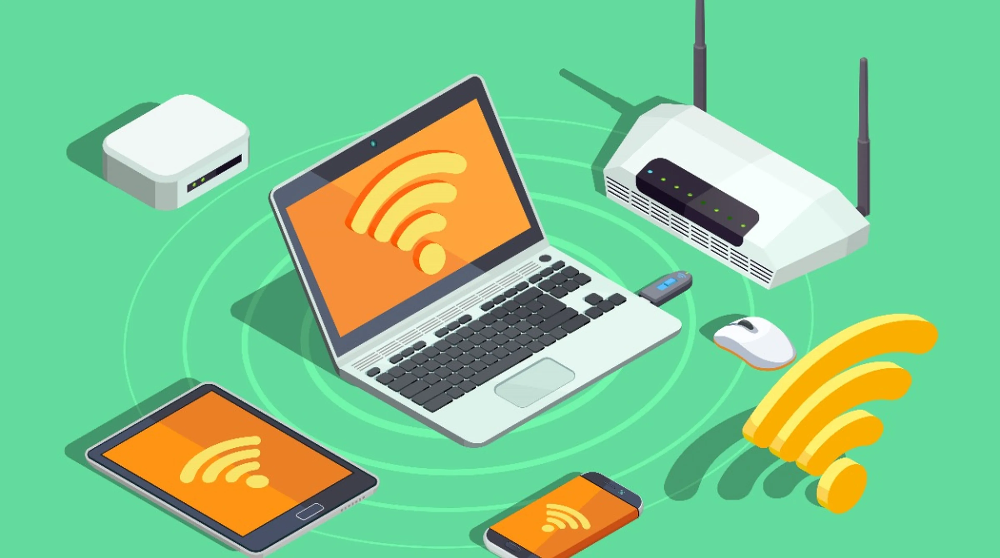

| Protocolo DCHP | Pros y Contras del Protocolo DHCP | Dispositivos de Comunicacion |
|---|---|---|
| Protocolo de red que asigna automáticamente direcciones IP y configuraciones de red a dispositivos. | Ventaja:- Facilidad de configuración.
Desventajas:- En caso de que se requiera un DNS, es necesario configurarlo manualmente para indicar las direcciones IP correspondientes |
Herramientas electrónicas que facilitan la transferencia de información entre usuarios o sistemas. |
 |
 |
|
| Firewall | Funciones del Firewall | Tipos de Cableado |
| Sistema de seguridad informática que regula el tráfico de red según reglas predefinidas, protegiendo una red al controlar y filtrar las comunicaciones para prevenir accesos no autorizados y amenazas. | -Filtrado de tráfico
-Protección contra amenazas conocidas |
-Cableado de Red
-Cableado Eléctrico -Cableado de Audio |
 |
||
| WiFi | ||
| Tecnología que permite la conexión inalámbrica de dispositivos a una red, facilitando el acceso a Internet y la comunicación sin la necesidad de cables físicos. | ||
|  |